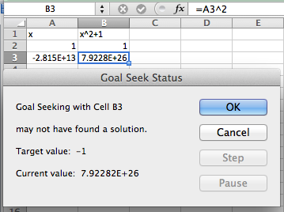

- We will use Goal Seek if we know what the desired output of an equation is, and would like to know when that output is achieved.
- We need to have an equation to work with and we can only solve for one kind of input (variable).
- Goal Seek is located under the What-If analysis menu.
Section 1.6 Finding Numerical Solutions with Goal Seek
In previous sections, we looked at deciding on a model to use for numerical data, and finding the best fitting curve of that model for our data. Once we have completed those phases of the process, we have reduced our data to an equation. At that point we want to use the equation to answer some question. Sometimes ,that question will reduce to solving an equation, as when we have an equation for profit as a function of sales and we want to know when the business will break even. At other times, we want to know what input gives a desired output. (e.g., How much do I need to sell to make $100,000 in commission?)
We can obviously use all the algebraic techniques we developed in previous courses to solve our problem symbolically. However, Excel gives us two tools to use to solve problems numerically, Goal Seek and Solver. In this section we will explore Goal Seek, the simpler of these tools.
Subsection 1.6.1 A linear example
As with all new techniques in a math class, we start with a very simple example that you can easily solve by methods you learned in previous courses. Suppose we have the function \(f(x) = 3 x + 5\text{,}\) and I want to find the value of \(x\) where \(f(x) = 40\text{.}\) I start by setting up a worksheet with \(x\) and \(f(x)\) as columns. I also need to start with a guessed value, which can be any number. I will start by guessing a value of 5. (I will enter that value twice so we can see before and after.)
I then go to the data tab and under the What-If analysis menu choose Goal Seek. In the Goal Seek dialog, I want to change
B3, to \(f(x)\text{,}\) to 40 by changing A3, or \(x\text{.}\) I then select OK.Excel finds the value and asks if it is OK to replace the initial guess with that value. In this case, Excel found the value of \(11.66666667\) or \(35/3\text{,}\) which we could also have found by simple algebra.
Subsection 1.6.2 A quadratic example and concern with precision
We move on to a quadratic example. We let \(f(x)=x^2\) and want to find \(f(x)=2\text{.}\) The set up is similar, with an appropriate change in the equation. However when I use Goal Seek, I don’t get quite the correct answer.
Instead of finding a value with \(x^2 = 2\text{,}\) I found a value with \(x^2 = 1.99999495\text{.}\)
- We note that Excel is not solving the problem algebraically, but is finding a numerical approximation within a preset tolerance.
- It is actually finding an x such that f(x) is within 0.001 of 2.
For most of our work, that is close enough. Sometimes, however, we may want more precision. (Our units may be millions of dollars.) In that case, we can improve the precision with a work around. We add another cell with a formula whose value is a large number, say \(10^6\text{,}\) times the error. We then use Goal Seek to make that value close to zero. We effectively reduce our error tolerance by a factor of our large number. Applying this to our example gives:
This has computed the value of the square root of 2 to 10 digits.
Subsection 1.6.3 More realistic examples: finding the intersection of two curves
Equivalently, finding where two functions are equal to one another.
In economics, there are the concepts of supply and demand prices, the prices that will produce a specified supply or demand. (We will look at this problem in more depth in the next chapter.) Suppose we are told the formula for the supply and demand prices of a product are:
\begin{equation*}
\Sprice (q) = \ln(50 + 1000 q) + q
\end{equation*}
\begin{equation*}
\Dprice (q) = 1000*\exp(-0.02*q)\text{.}
\end{equation*}
We want to find the quantity where supply and demand prices are equal. We first do a fast graph to get an understanding of what is going on.
We can see that the curves cross when q is somewhere between 100 and 110. To make this a Goal Seek problem, we add an extra column for the difference between supply and demand, and look for where that is zero.
We see that equilibrium occurs when q is 106.725. We could have found this algebraically by solving the equation
\begin{equation*}
0 = 1000*\exp(-0.02*q) - (\ln(50 + 1000*q) + q)\text{,}
\end{equation*}
but that is not an easy problem.
Our last example for Goal Seek looks at financial computations.
Subsection 1.6.4 Using Goal Seek for financial computations
Assume you have decided to open a retirement account when you get out of college. You decide that you will start by contributing $2,000 at the beginning of each year, with that amount increasing by $100 each year, assuming a 5% annual interest rate. The relevant formulas are:
\begin{align*}
\text{Ending Balance} \amp = \text{Beginning Balance + deposits + Interest Earned}\\
\text{Interest Earned} \amp = \text{(Beginning\ Balance + Deposits) * Interest\ Rate}\\
\text{Beginning Balance} \amp = \text{previous\ year's\ ending\ balance}\text{.}
\end{align*}
It becomes easy to set up a spreadsheet to compute the balance at the end of 40 years.
(We will look at this example in greater detail in a later chapter. For now, note that this example is in the Excel notebook for this section.) We can see that we have a bit more than $420,000 after 40 years.
With Goal Seek it is easy to ask the question of how we need to change the problem to have a balance of $500,000 after 40 years, either by changing the initial deposit, or the rate at which deposits are increasing, or the expected yield. We see that we need a yield of 5.74% to have $500,000 ready for retirement.
It is worthwhile to note that in this case our final balance is the result of a 120-step computation with our input variable. Goal Seek finds a solution without us having to reduce that 120-step computation to a single long formula.
Subsection 1.6.5 Looking under the hood and understanding Goal Seek’s limitations
As with any tool we use, it is wise to have some understanding of the method used by Goal Seek. That will help us understand when it is giving us an answer different from the one we were expecting, or even gives us an answer that is wrong.
Goal Seek uses Newton’s Method, a technique based on Calculus, to find solutions. The heart of the method is based on the fact that, at least for most functions nice enough to show up in a course like this, when you zoom in far enough on a graph you will get something that looks like a straight line. The line we find that way is called the tangent line. (Finding the slope of the tangent line, or the instantaneous rate of change, is one of the main goals of calculus, and is given the name of finding the derivative.) If we start with a guessed solution, we can produce a tangent line, find the point where the tangent line reaches the desired value, and take the point’s x-coordinate as our next guess. Repeating this process usually converges to a solution.
If we use the spreadsheet to illustrate Newton’s method for our example, finding the solution for \(x^2 = 2\) starting with a guess of \(x = 1\text{,}\) we see that it converges in 5 iterations. (At this point, we are simply illustrating how Goal Seek works. You are not yet expected to be able to replicate the process. You will learn how to find the slope of the tangent in later chapters.)
As mentioned earlier, the reason for looking under the hood of Goal Seek is to understand when it gives us an unexpected answer. A simplified description of the method used is that it heads down to where it expects to find a solution and repeats the process until it is within 0.001 of the desired answer. There are several easy ways for this method to cause problems.
The first difficulty is that Goal Seek may not give you the answer you are looking for if there are multiple answers. The function \(f(x) = x^3 - x\) has three roots, \(x = -1, 0, 1\text{.}\) If we give Goal Seek a starting point of \(x=.55\text{,}\) it will give the solution of \(x=0\text{.}\)
As a general rule, Goal Seek will get to the correct answer if there are no big curves between the guess and the answer. Another difficulty arises if you ask Goal Seek a question for which there is no answer. The easy case is when there is no answer and we don’t even get close. We could ask it to find an x with \(x^2+1=0\text{.}\) Since we know that all squares are non-negative, this does not have an answer. Goal Seek will tell us that, but it will make some pretty wild guesses.

In this case Goal Seek will run for a fixed number of iterations and tell us it “may not have found a solution.†In that case it will tell us where it ended and give us the choice of accepting that point, or cancelling and going back to where we started. If there is no solution and one of our intermediate points was close to a point with a flat tangent line, we may wind up anywhere.
The more challenging case arises when there is no answer, but we get close. We can ask Goal Seek to find an x with \(1/x^4 = 0\text{.}\) Clearly this problem has no answer. However, if we start with a guess of \(x = 1\text{,}\) we get an answer of \(x = 6.14798\text{.}\) That is because \(1/6.14798^4\) is within our tolerance of 0. In both of these cases, we see that when we use Goal Seek we should also look at the graph of the function in question to make sure we are asking a reasonable question.
A variant of these problems occasionally shows up. If we start with a carefully rigged problem we can set the algorithm of Goal Seek into a loop. If we start with the function \(f(x) = x^3 - 50*x\) with an initial guess of \(x=1\text{,}\) and ask Goal Seek to find when \(f(x) = 500\text{,}\) Goal Seek will not find an answer. In this case we could look at a graph and make an initial guess of 6, and then get a correct answer. Once again, with a numerical method, it pays to try some cases and make sure that our guess is close to a reasonable answer. If \(f(x)\) is a continuous function, this means finding a value of \(x\) where \(f(x)\) is too low and another value where \(f(x)\) is too high.
While Excel is a powerful tool, we should always ask if there is an easier way to do a problem. Most of the examples we looked at in this section boil down to finding a solution to \(f(x)=0\) where \(f(x)\) is a simple equation. We can solve such problems more quickly with Wolfram Alpha.
As noted above, Goal Seek is most useful for problems with lots of steps where we would have difficulty reducing the problem to a single equation.
Reading Questions 1.6.6 Reading Check
1. Reading check, Finding Numerical Solutions with Goal Seek.
This question checks your reading comprehension of the material is section 1.6, Finding Numerical Solutions with Goal Seek, of Business Calculus with Excel. Based on your reading, select all statements that are correct. There may be more than one correct answer. The statements may appear in what seems to be a random order.
- Goal Seek finds an exact answer.
- Goal Seek lets you determine the input of a function that gives a desired output.
- Goal Seek is found by choosing what if analysis.
- Goal Seek only works with if the function can be put in a single cell.
- Goal Seek always finds the answer closest to the starting value.
- Goal seek gets confused by functions that asymptotically approach zero.
- Goal Seek stops when it finds an answer whose output is within 0.001 of the desired output.
- None of the above
Exercises 1.6.7 Finding Numerical Solutions with Goal Seek
Exercise Group.
Use Goal Seek to find where the given equation has the desired value.
1.
Let \(f(x) = -2 x^2 + 20 x + 7\text{.}\) Find an \(x\) so that \(f(x) = 50\text{.}\)
Solution.
Wolfram detects two solutions.
2.
Let \(f(x) = -x^2 + 4 x + 5\text{.}\) Find an \(x\) so that \(f(x) = -5\text{.}\)
3.
Let \(f(x) = 5 x + 7/x\text{.}\) Find an \(x\) so that \(f(x) = 20\text{.}\)
Solution.
4.
Let \(f(x) = 10 \exp(x/10)\text{.}\) Find an \(x\) so that \(f(x) = 1000\text{.}\)
5.
Let \(f(x) = \ln(x+5) + 7\text{.}\) Find an \(x\) so that \(f(x) = 5\text{.}\)
Solution.
Note that next to the solution there is a button for “Approximate form”.
We can use that to get a decimal approximation:
Note that we can get more digits if we want or return to the exact answer
6.
Let \(f(x) = 1000*(1/2)^{(x/7)}\text{.}\) Find an \(x\) so that \(f(x) = 50\text{.}\)
Exercise Group.
Use Goal Seek to find the indicated number of points where the curves intersect.
7.
Find an intersection point of \(f(x) = 5 x + 7\) and \(g(x) = 40 - 2 x\text{.}\)
Solution.
Finding the intersection point means we are setting the two equations equal to one another. Wolfram will include a plot of the solution as well as the numerical answer.
Wolfram tells us that \(x=\frac{33}{7}\text{.}\) We can plug that into one of the equations and get
\begin{equation*}
y=40-\frac{66}{7}=\frac{280}{7}-\frac{66}{7}=\frac{214}{7}\text{.}
\end{equation*}
So the intersection point is \((x,y)=(\frac{33}{7} ,\frac{214}{7})\text{.}\)
8.
Find an intersection point of \(f(x) = 5 x\) and \(g(x) = 9 x / 7\text{.}\)
9.
Find an intersection point of \(f(t) = \exp(-0.05 t)*(3 t + 5)\) and \(g(t) = t/10\text{.}\)
Solution.
Wolfram finds two intersections: one at \(t\approx-1.71925\) and the other at \(t\approx68.5047\text{.}\)
Using the function \(g(t)=t/10\) we get the two intersection points at \((-1.71925,-.171925)\) and \((68.5047,6.85047)\text{.}\)
10.
Find an intersection point of \(f(t) = 20 \ln(100 t + 854)\) and \(g(t) = 0.02 t\text{.}\)
11.
Find both intersection points of \(f(x) = 7 + 10 x - x^2\) and \(g(x) = 0\text{.}\)
Solution.

The \(y\)-coordinates must be 0. If we use the approximate form of the solution we get \((-0.65685,0)\) and \((10.657,0)\text{.}\)
12.
Find both intersection points of \(f(x) = 15 x + 200/x\) and \(g(x) = 20 + 25 x\text{.}\)
13.
We have reason to believe that the profit function for widget manufacturing is modeled by a quadratic equation. We have the following data for sales and profits.
| Sales | 100 | 250 | 350 | 500 | 600 |
| Profit | $8,462 | $18,378 | $22,455 | $24,400 | $23,747 |
- Find the best fitting curve for the data.
- Find the two break-even point, or amount of sales that yield a profit of $0.
Solution.
-
Using Excel we find the best fitting polynomial of order 2:
 \(y = -0.1006x2 + 100.66x - 555.65\)
\(y = -0.1006x2 + 100.66x - 555.65\) -
Using Wolfram we then find where the profit is 0. Using the approximate form of the solution is preferable in this case because we want to know at what Sales we have 0 profit (the break-even points).The break-even points are at sales of 5.55 and 995.05.
14.
A certain bank will give a $75 bonus on a new account with a deposit of $1000, and then pays 5% interest compounded continuously. A second investment opportunity will pay $100 per year.
- Which opportunity pays more in the first year?
- For what period of time do the two opportunities offer the same return?
- What is the payout from the two opportunities for a 30-year investment?
- What is the second period of time when the two opportunities offer the same return?
15.
Let \(f(x) = (10 x-1) *\exp(-x) + 2\text{.}\)
- Find a solution with Goal Seek starting with x=1.
- What happens when Goal Seek tries to find a solution starting at \(x=2\text{?}\)
- Explain why, from the graph of \(f(x)\text{,}\) we should expect this problem.
Solution.
-
The entry in cell B2 is
=(10*A2-1)*EXP(-A2)+2.In the screen grab the values of \(f\) for \(x = 1\) and \(x = 2\) are given, and below it the result for the GoalSeek procedure are given.For \(x = 1\) as the starting point GoalSeek find a zero at \(x\approx-0.0839\) - Starting at \(x = 2\) GoalSeek does not find a zero at all. If we run GoalSeek a second time, now starting with the value at \(x = 53.02\) we zoom in on the first zero!
-
Using Wolfram, we see a fairly complicated solution, but we are also shown that there is one real solution.Looking at the graph we see that there is clearly only one solution to the equation \((10 x-1) *\exp(-x) + 2 = 0\text{.}\)If we start Goalseek at \(x = 2\text{,}\) the graph is sloping down to the right, which is why Goalseek approximates the zero to be at about \(= 53\text{.}\) The graph looks to be asymptotically approaching the \(x\)-axis. In this case Wolfram would have given the correct answer a bit more easily.
16.
Let \(f(x) = x^2*\exp(-(x^2))\text{.}\)
- Find a solution with Goal Seek, starting with \(x=.5\text{.}\) Does this represent an actual solution?
- Find a solution with Goal Seek, starting with \(x=2\text{.}\) Does this represent an actual solution?